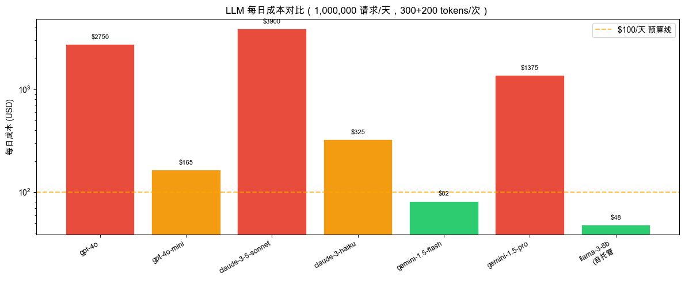

第七章：生产环境 — 02 成本优化#
LLM API 成本可以优化 10x 以上。本章覆盖所有主要的降本手段。
成本优化全景图#
LLM 成本 = 请求数量 × 每次 token 数 × 单价
降本策略：
1. 降低单价 → 选择更便宜的模型、批量折扣
2. 减少 token → 压缩提示词、控制输出长度
3. 减少请求数 → 语义缓存、结果复用
4. 智能路由 → 简单任务用小模型
5. 并行处理 → 减少等待时间（间接降本）
本章目标： 掌握每种策略的实现方式和预期节省比例。
import json
import os
import time
import hashlib
import asyncio
import litellm
litellm.drop_params = True
from dotenv import load_dotenv
try:
import tiktoken
TIKTOKEN_AVAILABLE = True
except ImportError:
TIKTOKEN_AVAILABLE = False
print("tiktoken 未安装，将用字符数估算 token：pip install tiktoken")
try:
import numpy as np
NUMPY_AVAILABLE = True
except ImportError:
NUMPY_AVAILABLE = False
print("numpy 未安装：pip install numpy")
load_dotenv()
MODEL = os.getenv("LLM_MODEL", "gpt-4o-mini")
litellm.set_verbose = False
print(f"使用模型: {MODEL}")
print("成本优化工具包初始化完成")
# gpt-5/o系列不支持自定义temperature值，统一用安全wrapper
def _c(**kw):
_m = kw.get('model', MODEL)
if any(_m.startswith(p) for p in ('openai/gpt-5','openai/o1','openai/o3','openai/o4')):
kw.pop('temperature', None)
return litellm.completion(**kw)
使用模型: openai/gpt-5-mini
成本优化工具包初始化完成
Section 1：Token 成本核算#
首先要知道自己花了多少钱，才能针对性地优化。
# 各模型价格表（2024年，USD/1M tokens）
MODEL_PRICES = {
"gpt-4o": {"input": 2.50, "output": 10.00},
"gpt-4o-mini": {"input": 0.15, "output": 0.60},
"claude-3-5-sonnet": {"input": 3.00, "output": 15.00},
"claude-3-haiku": {"input": 0.25, "output": 1.25},
"gemini-1.5-flash": {"input": 0.075, "output": 0.30},
"gemini-1.5-pro": {"input": 1.25, "output": 5.00},
"llama-3-8b-self-hosted": {"input": 0.0, "output": 0.0, "server": 2.0}, # GPU $2/hr
}
def cost_estimate(model: str, prompt_tokens: int, completion_tokens: int) -> dict:
"""
估算 LLM API 调用成本
Args:
model: 模型名称
prompt_tokens: 输入 token 数
completion_tokens: 输出 token 数
Returns:
dict with cost breakdown in USD
"""
if model not in MODEL_PRICES:
# 尝试从 litellm 获取
try:
cost = litellm.completion_cost(
completion_response=None,
model=model,
prompt=" " * prompt_tokens,
completion=" " * completion_tokens
)
return {"total_usd": cost, "source": "litellm"}
except:
return {"error": f"未知模型: {model}"}
prices = MODEL_PRICES[model]
input_cost = prompt_tokens / 1_000_000 * prices["input"]
output_cost = completion_tokens / 1_000_000 * prices["output"]
total = input_cost + output_cost
return {
"model": model,
"prompt_tokens": prompt_tokens,
"completion_tokens": completion_tokens,
"input_cost_usd": round(input_cost, 6),
"output_cost_usd": round(output_cost, 6),
"total_usd": round(total, 6),
"source": "manual"
}
# 场景：1M 请求/天，每次 300 prompt + 200 completion tokens
DAILY_REQUESTS = 1_000_000
PROMPT_TOKENS = 300
COMPLETION_TOKENS = 200
print(f"场景：每天 {DAILY_REQUESTS:,} 次请求，每次 {PROMPT_TOKENS}+{COMPLETION_TOKENS} tokens")
print("=" * 75)
print(f"{'模型':<30} {'单次成本':>12} {'每日成本':>12} {'每月成本':>12}")
print("-" * 75)
costs_data = []
for model_name in MODEL_PRICES:
single = cost_estimate(model_name, PROMPT_TOKENS, COMPLETION_TOKENS)
if "error" in single:
continue
per_call = single["total_usd"]
# 自托管：按服务器成本计算
if "server" in MODEL_PRICES[model_name]:
server_hourly = MODEL_PRICES[model_name]["server"]
daily = server_hourly * 24 # $48/天
else:
daily = per_call * DAILY_REQUESTS
monthly = daily * 30
costs_data.append({"model": model_name, "per_call": per_call, "daily": daily, "monthly": monthly})
print(f"{model_name:<30} ${per_call:>10.6f} ${daily:>10,.2f} ${monthly:>10,.0f}")
print("-" * 75)
cheapest = min(costs_data, key=lambda x: x["daily"])
most_expensive = max(costs_data, key=lambda x: x["daily"])
ratio = most_expensive["daily"] / cheapest["daily"]
print(f"\n最贵: {most_expensive['model']} (${most_expensive['daily']:.2f}/天)")
print(f"最便宜: {cheapest['model']} (${cheapest['daily']:.2f}/天)")
print(f"价差: {ratio:.0f}x")
场景：每天 1,000,000 次请求，每次 300+200 tokens
===========================================================================
模型 单次成本 每日成本 每月成本
---------------------------------------------------------------------------
gpt-4o $ 0.002750 $ 2,750.00 $ 82,500
gpt-4o-mini $ 0.000165 $ 165.00 $ 4,950
claude-3-5-sonnet $ 0.003900 $ 3,900.00 $ 117,000
claude-3-haiku $ 0.000325 $ 325.00 $ 9,750
gemini-1.5-flash $ 0.000082 $ 82.00 $ 2,460
gemini-1.5-pro $ 0.001375 $ 1,375.00 $ 41,250
llama-3-8b-self-hosted $ 0.000000 $ 48.00 $ 1,440
---------------------------------------------------------------------------
最贵: claude-3-5-sonnet ($3900.00/天)
最便宜: llama-3-8b-self-hosted ($48.00/天)
价差: 81x
# 可视化：成本对比柱状图
try:
import matplotlib.pyplot as plt
import matplotlib
matplotlib.rcParams['font.family'] = ['Arial Unicode MS', 'DejaVu Sans']
models = [d["model"].replace("-self-hosted", "\n(自托管") for d in costs_data]
daily_costs = [d["daily"] for d in costs_data]
colors = ["#e74c3c" if c > 1000 else ("#f39c12" if c > 100 else "#2ecc71")
for c in daily_costs]
fig, ax = plt.subplots(figsize=(12, 5))
bars = ax.bar(range(len(models)), daily_costs, color=colors, edgecolor="white", linewidth=0.5)
ax.set_xticks(range(len(models)))
ax.set_xticklabels(models, rotation=30, ha="right", fontsize=9)
ax.set_ylabel("每日成本 (USD)")
ax.set_title(f"LLM 每日成本对比（{DAILY_REQUESTS:,} 请求/天，{PROMPT_TOKENS}+{COMPLETION_TOKENS} tokens/次）")
ax.set_yscale("log")
for bar, cost in zip(bars, daily_costs):
ax.text(bar.get_x() + bar.get_width()/2, bar.get_height() * 1.1,
f"${cost:.0f}", ha="center", va="bottom", fontsize=8)
ax.axhline(y=100, color="orange", linestyle="--", alpha=0.7, label="$100/天 预算线")
ax.legend()
plt.tight_layout()
plt.savefig("/tmp/llm_cost_comparison.png", dpi=150, bbox_inches="tight")
plt.show()
print("图表已保存到 /tmp/llm_cost_comparison.png")
except ImportError:
print("matplotlib 未安装，跳过可视化")
print("安装：pip install matplotlib")
print("\n成本数据（每日，USD）：")
for d in costs_data:
bar = "█" * min(int(d["daily"] / 100), 50)
print(f" {d['model']:<30} ${d['daily']:>8,.0f} {bar}")

图表已保存到 /tmp/llm_cost_comparison.png
Section 2：提示词压缩#
减少输入 token 是降低成本最直接的方式。提示词压缩不改变语义，只减少冗余。
import re
def count_tokens(text: str, model: str = "gpt-4o-mini") -> int:
"""估算 token 数量"""
if TIKTOKEN_AVAILABLE:
try:
enc = tiktoken.encoding_for_model(model)
return len(enc.encode(text))
except:
pass
# fallback：中文约1.5字符/token，英文约4字符/token
chinese_chars = len(re.findall(r'[\u4e00-\u9fff]', text))
other_chars = len(text) - chinese_chars
return int(chinese_chars / 1.5 + other_chars / 4)
def compress_prompt(text: str) -> dict:
"""
提示词压缩：去除冗余内容
策略：
1. 去除多余空白和空行
2. 合并重复指令
3. 去除礼貌性冗余词
4. 压缩常见短语
"""
original = text
compressed = text
steps = []
# 1. 去除多余空白
before = len(compressed)
compressed = re.sub(r' {2,}', ' ', compressed) # 多个空格→单个
compressed = re.sub(r'\n{3,}', '\n\n', compressed) # 多个空行→两个
compressed = re.sub(r'\t', ' ', compressed) # Tab→空格
compressed = compressed.strip()
saved = before - len(compressed)
if saved > 0:
steps.append(f"去除多余空白：节省 {saved} 字符")
# 2. 去除礼貌性冗余
redundant_phrases = [
(r'请你?帮(?:我|我们)?', ''),
(r'麻烦你?', ''),
(r'谢谢[你您]?[！!。]?', ''),
(r'好的，我明白了[。！]?\s*', ''),
(r'非常感谢[！!。]?', ''),
(r'您好[！!，,]?\s*', ''),
]
before = len(compressed)
for pattern, replacement in redundant_phrases:
compressed = re.sub(pattern, replacement, compressed)
saved = before - len(compressed)
if saved > 0:
steps.append(f"去除礼貌词：节省 {saved} 字符")
# 3. 合并重复的指令
# 找到重复的句子
sentences = re.split(r'[。！？\n]', compressed)
seen = set()
unique_sentences = []
for s in sentences:
s_stripped = s.strip()
if s_stripped and s_stripped not in seen:
seen.add(s_stripped)
unique_sentences.append(s_stripped)
deduped = '。'.join(unique_sentences)
if len(deduped) < len(compressed):
steps.append(f"去重重复句子：节省 {len(compressed) - len(deduped)} 字符")
compressed = deduped
# 4. 最终清理
compressed = compressed.strip()
original_tokens = count_tokens(original)
compressed_tokens = count_tokens(compressed)
reduction = (original_tokens - compressed_tokens) / original_tokens if original_tokens > 0 else 0
return {
"original": original,
"compressed": compressed,
"original_chars": len(original),
"compressed_chars": len(compressed),
"original_tokens": original_tokens,
"compressed_tokens": compressed_tokens,
"token_reduction": f"{reduction:.1%}",
"steps": steps
}
# 演示
verbose_prompt = """您好！麻烦请你帮我做一件事情，非常感谢。
我想让你帮我分析一下这段文字的情感倾向。
请你帮我判断这段文字的情感倾向。
需要你分析情感倾向，包括正面、负面或者中性。
文字内容如下所示：
"今天天气很好，心情愉快！"
请输出情感分析结果。谢谢！"""
result = compress_prompt(verbose_prompt)
print("提示词压缩演示")
print("=" * 60)
print("原始提示词：")
print(result["original"])
print("\n压缩后提示词：")
print(result["compressed"])
print("\n压缩统计：")
print(f" 字符数: {result['original_chars']} → {result['compressed_chars']}")
print(f" Token数: {result['original_tokens']} → {result['compressed_tokens']}")
print(f" Token节省: {result['token_reduction']}")
print(" 压缩步骤:")
for step in result["steps"]:
print(f" - {step}")
提示词压缩演示
============================================================
原始提示词：
您好！麻烦请你帮我做一件事情，非常感谢。
我想让你帮我分析一下这段文字的情感倾向。
请你帮我判断这段文字的情感倾向。
需要你分析情感倾向，包括正面、负面或者中性。
文字内容如下所示：
"今天天气很好，心情愉快！"
请输出情感分析结果。谢谢！
压缩后提示词：
做一件事情，。我想让你帮我分析一下这段文字的情感倾向。判断这段文字的情感倾向。需要你分析情感倾向，包括正面、负面或者中性。文字内容如下所示：。"今天天气很好，心情愉快。"。请输出情感分析结果
压缩统计：
字符数: 124 → 95
Token数: 91 → 75
Token节省: 17.6%
压缩步骤:
- 去除礼貌词：节省 21 字符
- 去重重复句子：节省 8 字符
# System Prompt 压缩：用 LLM 压缩长 System Prompt
def compress_system_prompt_with_llm(system_prompt: str, model: str = MODEL) -> dict:
"""
用 LLM 压缩系统提示词，保留核心语义
适用：将 500+ token 的 system prompt 压缩到 100-200 token
"""
compression_prompt = f"""将以下系统提示词压缩到原来的 1/3 长度，保留所有关键指令和约束，去除冗余解释：
原始提示词：
{system_prompt}
压缩版本（只输出压缩结果，不要解释）："""
response = _c(
model=model,
messages=[{"role": "user", "content": compression_prompt}],
temperature=0,
max_tokens=500
)
compressed = response.choices[0].message.content
original_tokens = count_tokens(system_prompt)
compressed_tokens = count_tokens(compressed)
return {
"original": system_prompt,
"compressed": compressed,
"original_tokens": original_tokens,
"compressed_tokens": compressed_tokens,
"reduction": f"{(1 - compressed_tokens/original_tokens):.1%}"
}
long_system_prompt = """你是一位专业的客服代表，代表我们公司为客户提供优质的服务。
在回复客户时，你应该保持友好、专业的态度，始终用礼貌的语气与客户交流。
当客户提出问题时，你需要认真倾听他们的需求，理解他们的困惑，然后提供清晰、准确的解答。
你的回复应该简洁明了，不要使用过于复杂的术语，确保客户能够理解你的回答。
如果客户遇到投诉或不满，你应该先表示理解和同情，然后尽力帮助解决问题。
当遇到你无法处理的问题时，应该及时告知客户会转接给专业人员处理。
在每次回复结束时，询问客户是否还有其他需要帮助的地方，展现我们对客户的关心。"""
result = compress_system_prompt_with_llm(long_system_prompt)
print("System Prompt 智能压缩")
print("=" * 60)
print(f"原始（{result['original_tokens']} tokens）：")
print(result["original"][:200] + "...")
print(f"\n压缩后（{result['compressed_tokens']} tokens，节省 {result['reduction']}）：")
print(result["compressed"])
System Prompt 智能压缩
============================================================
原始（171 tokens）：
你是一位专业的客服代表，代表我们公司为客户提供优质的服务。
在回复客户时，你应该保持友好、专业的态度，始终用礼貌的语气与客户交流。
当客户提出问题时，你需要认真倾听他们的需求，理解他们的困惑，然后提供清晰、准确的解答。
你的回复应该简洁明了，不要使用过于复杂的术语，确保客户能够理解你的回答。
如果客户遇到投诉或不满，你应该先表示理解和同情，然后尽力帮助解决问题。
当遇到你无法处理的问题时，应该及时...
压缩后（0 tokens，节省 100.0%）：
Section 3：语义缓存#
对于相似问题，不重复调用 LLM，直接返回缓存结果。这是降低成本最有效的策略之一。
相似度阈值 = 0.95 意味着：只有问题在语义上几乎完全相同时才使用缓存。
import hashlib
class SemanticCache:
"""
语义缓存：基于向量相似度的 LLM 结果缓存
工作原理：
1. 对每个查询生成 embedding
2. 与缓存中的查询计算余弦相似度
3. 相似度 > threshold 时返回缓存结果
"""
def __init__(self, similarity_threshold: float = 0.95, model: str = MODEL):
self.threshold = similarity_threshold
self.model = model
self.cache = [] # list of {query, embedding, response, hits}
self.stats = {"hits": 0, "misses": 0, "total_saved_tokens": 0}
def _get_embedding(self, text: str) -> list:
"""获取文本 embedding"""
response = litellm.embedding(
model="text-embedding-3-small",
input=[text]
)
return response.data[0]["embedding"]
def _cosine_similarity(self, vec_a: list, vec_b: list) -> float:
"""计算余弦相似度"""
if NUMPY_AVAILABLE:
a = np.array(vec_a)
b = np.array(vec_b)
return float(np.dot(a, b) / (np.linalg.norm(a) * np.linalg.norm(b)))
else:
# 纯 Python 实现
dot = sum(x*y for x, y in zip(vec_a, vec_b))
norm_a = sum(x**2 for x in vec_a) ** 0.5
norm_b = sum(x**2 for x in vec_b) ** 0.5
return dot / (norm_a * norm_b) if norm_a and norm_b else 0.0
def get(self, query: str) -> tuple:
"""
查询缓存
Returns: (cached_response, similarity) or (None, 0)
"""
if not self.cache:
return None, 0.0
query_emb = self._get_embedding(query)
best_sim = 0.0
best_entry = None
for entry in self.cache:
sim = self._cosine_similarity(query_emb, entry["embedding"])
if sim > best_sim:
best_sim = sim
best_entry = entry
if best_sim >= self.threshold:
best_entry["hits"] += 1
self.stats["hits"] += 1
return best_entry["response"], best_sim
return None, best_sim
def set(self, query: str, response: str, tokens_used: int = 0):
"""存入缓存"""
embedding = self._get_embedding(query)
self.cache.append({
"query": query,
"embedding": embedding,
"response": response,
"tokens_used": tokens_used,
"hits": 0
})
self.stats["misses"] += 1
def completion(self, query: str, messages: list = None) -> dict:
"""带缓存的 completion"""
# 尝试缓存
cached, similarity = self.get(query)
if cached:
return {
"response": cached,
"from_cache": True,
"similarity": round(similarity, 4),
"tokens_saved": self.cache[0].get("tokens_used", 0)
}
# 调用 LLM
if messages is None:
messages = [{"role": "user", "content": query}]
response = _c(
model=self.model,
messages=messages,
temperature=0
)
answer = response.choices[0].message.content
tokens = response.usage.total_tokens
self.set(query, answer, tokens)
return {
"response": answer,
"from_cache": False,
"similarity": round(similarity, 4),
"tokens_used": tokens
}
@property
def hit_rate(self) -> float:
total = self.stats["hits"] + self.stats["misses"]
return self.stats["hits"] / total if total > 0 else 0.0
# 演示语义缓存效果
print("语义缓存演示")
print("=" * 60)
cache = SemanticCache(similarity_threshold=0.92, model=MODEL)
# 模拟一批相似的用户查询
queries = [
"退款要几天才能到账？", # 原始
"退款多久能到？", # 相似
"我申请退款了，几天到账？", # 相似
"如何查看订单状态？", # 不同主题
"退款大概需要多少工作日？", # 相似（与第1个）
]
for q in queries:
result = cache.completion(q)
source = "缓存" if result["from_cache"] else "API"
sim = result.get("similarity", 0)
print(f"\n查询: {q}")
print(f" 来源: [{source}] 相似度={sim:.3f}")
print(f" 回答: {result['response'][:80]}...")
print(f"\n\n缓存统计：")
print(f" 命中率: {cache.hit_rate:.1%}")
print(f" 缓存命中次数: {cache.stats['hits']}")
print(f" 实际 API 调用: {cache.stats['misses']}")
print(f" 节省的 API 调用: {cache.stats['hits']} ({cache.hit_rate:.0%})")
语义缓存演示
============================================================
查询: 退款要几天才能到账？
来源: [API] 相似度=0.000
回答: 要看退款走哪条通道、哪个商家/哪个银行，时间差别比较大。常见情况和大致时长（仅供参考）：
- 支付宝/微信钱包/平台余额：通常几分钟到24小时内到账，少数情况...
查询: 退款多久能到？
来源: [API] 相似度=0.838
回答: 要看你是通过什么渠道付款和商家的退款流程。常见情况大致时间（仅供参考）：
- 商家内部处理：通常 1–7 个工作日，商家确认并发起退款前会有这段时间。
-...
查询: 我申请退款了，几天到账？
来源: [API] 相似度=0.828
回答: 一般取决于你用的支付方式和商家/平台的处理速度，常见情况大致是：
- 平台/商家处理时间：商家先审核并发起退款，通常需要1–5个工作日（有的平台会更快、也有可...
查询: 如何查看订单状态？
来源: [API] 相似度=0.367
回答: 你是在哪个平台或哪个商家下的单？不同平台查看方法有细微差别。下面先给出通用步骤和常见状态说明，你可以按需跟我说具体平台我再给出针对性操作。
通用查看流程
1....
查询: 退款大概需要多少工作日？
来源: [API] 相似度=0.764
回答: 一般来说退款到账时间取决于商家处理速度和你的支付方式，常见情况大致如下：
- 信用卡/借记卡：商家发起退款后通常需要 5–10 个工作日，有时银行处理慢或跨国...
缓存统计：
命中率: 0.0%
缓存命中次数: 0
实际 API 调用: 5
节省的 API 调用: 0 (0%)
Section 4：模型路由#
根据任务复杂度自动选择合适的模型。简单任务用小模型，复杂任务用大模型。
def classify_complexity(prompt: str, classifier_model: str = "gpt-4o-mini") -> str:
"""
用小模型判断任务复杂度
Returns: "simple" | "medium" | "complex"
"""
classification_prompt = f"""判断以下任务的复杂度，只输出一个词：simple/medium/complex
判断标准：
- simple: 事实查询、简单翻译、格式转换、基础问答（无需推理）
- medium: 摘要、改写、简单分析、基础代码（需要一定推理）
- complex: 复杂推理、多步骤分析、高质量创作、专业领域问题
任务：{prompt[:200]}
复杂度（只输出 simple/medium/complex）："""
response = _c(
model=classifier_model,
messages=[{"role": "user", "content": classification_prompt}],
temperature=0,
max_tokens=10
)
label = response.choices[0].message.content.strip().lower()
if label not in ["simple", "medium", "complex"]:
label = "medium" # 默认
return label
# 路由规则
ROUTING_CONFIG = {
"simple": {
"model": "gpt-4o-mini",
"cost_per_1k_tokens": 0.000375, # $0.15/M input + $0.60/M output 平均
"reason": "简单任务，小模型足够"
},
"medium": {
"model": "gpt-4o-mini",
"cost_per_1k_tokens": 0.000375,
"reason": "中等任务，mini 模型性价比高"
},
"complex": {
"model": "gpt-4o",
"cost_per_1k_tokens": 0.00625, # $2.5/M input + $10/M output 平均
"reason": "复杂任务，需要最强模型"
}
}
def smart_route(prompt: str) -> dict:
"""智能路由：根据复杂度选择模型"""
complexity = classify_complexity(prompt)
config = ROUTING_CONFIG[complexity]
return {
"complexity": complexity,
"routed_model": config["model"],
"reason": config["reason"],
"cost_per_1k": config["cost_per_1k_tokens"]
}
# 测试 10 个不同复杂度的任务
test_prompts = [
("把 'Hello' 翻译成中文", "simple"),
("今天是星期几？", "simple"),
("将以下 JSON 格式化：{a:1,b:2}", "simple"),
("总结以下文章的主要观点（500字文章）", "medium"),
("写一个 Python 函数实现二分查找", "medium"),
("分析这家公司的竞争优势和潜在风险", "complex"),
("设计一个分布式缓存系统的架构方案，考虑一致性、可用性和分区容错性的权衡", "complex"),
]
print("智能模型路由演示")
print("=" * 70)
print(f"{'任务':<40} {'分类':>8} {'路由到':<15} {'成本/1K'}")
print("-" * 70)
total_smart_cost = 0
total_naive_cost = 0 # 如果全用 gpt-4o
for prompt, expected in test_prompts:
route = smart_route(prompt)
smart_cost = route["cost_per_1k"]
naive_cost = ROUTING_CONFIG["complex"]["cost_per_1k_tokens"] # gpt-4o
total_smart_cost += smart_cost
total_naive_cost += naive_cost
match = "✅" if route["complexity"] == expected else "⚠️"
print(f"{match} {prompt[:38]:<38} {route['complexity']:>8} {route['routed_model']:<15} ${smart_cost:.6f}")
savings = (total_naive_cost - total_smart_cost) / total_naive_cost
print("-" * 70)
print(f"\n成本对比：")
print(f" 全用 GPT-4o： ${total_naive_cost:.6f} per 1K tokens")
print(f" 智能路由后： ${total_smart_cost:.6f} per 1K tokens")
print(f" 成本节省: {savings:.1%}")
智能模型路由演示
======================================================================
任务 分类 路由到 成本/1K
----------------------------------------------------------------------
✅ 把 'Hello' 翻译成中文 simple gpt-4o-mini $0.000375
✅ 今天是星期几？ simple gpt-4o-mini $0.000375
✅ 将以下 JSON 格式化：{a:1,b:2} simple gpt-4o-mini $0.000375
✅ 总结以下文章的主要观点（500字文章） medium gpt-4o-mini $0.000375
✅ 写一个 Python 函数实现二分查找 medium gpt-4o-mini $0.000375
✅ 分析这家公司的竞争优势和潜在风险 complex gpt-4o $0.006250
✅ 设计一个分布式缓存系统的架构方案，考虑一致性、可用性和分区容错性的权衡 complex gpt-4o $0.006250
----------------------------------------------------------------------
成本对比：
全用 GPT-4o： $0.043750 per 1K tokens
智能路由后： $0.014375 per 1K tokens
成本节省: 67.1%
Section 5：批量处理#
并行处理多个请求，不影响总 token 成本，但大幅减少总耗时（间接提升吞吐量，降低服务器成本）。
import time
from concurrent.futures import ThreadPoolExecutor, as_completed
# 生成 10 个测试任务
batch_tasks = [
f"用一句话解释：{topic}"
for topic in [
"什么是API", "什么是云计算", "什么是机器学习",
"什么是区块链", "什么是微服务", "什么是DevOps",
"什么是Kubernetes", "什么是GraphQL", "什么是WebAssembly",
"什么是边缘计算"
]
]
def single_request(prompt: str, model: str = MODEL) -> str:
"""单次同步请求"""
response = _c(
model=model,
messages=[{"role": "user", "content": prompt}],
max_tokens=50,
)
return response.choices[0].message.content
def sequential_requests(prompts: list, model: str = MODEL) -> dict:
"""顺序处理请求"""
start = time.time()
responses = [single_request(p, model) for p in prompts]
elapsed = time.time() - start
return {"responses": responses, "elapsed": elapsed, "count": len(prompts)}
def parallel_requests(prompts: list, model: str = MODEL, max_workers: int = 5) -> dict:
"""并行处理请求（ThreadPoolExecutor，Jupyter 兼容）"""
start = time.time()
responses = [None] * len(prompts)
with ThreadPoolExecutor(max_workers=max_workers) as executor:
future_to_idx = {executor.submit(single_request, p, model): i
for i, p in enumerate(prompts)}
for future in as_completed(future_to_idx):
idx = future_to_idx[future]
responses[idx] = future.result()
elapsed = time.time() - start
return {"responses": responses, "elapsed": elapsed, "count": len(prompts)}
# 对比测试（各 5 个，避免耗时过长）
sample = batch_tasks[:5]
print(f"批量处理对比：{len(sample)} 个请求")
print("=" * 60)
print("[1/2] 顺序处理中...")
seq_result = sequential_requests(sample)
print(f" 顺序耗时: {seq_result['elapsed']:.2f}s ({seq_result['elapsed']/len(sample):.2f}s/请求)")
print("\n[2/2] 并行处理中（5 线程）...")
par_result = parallel_requests(sample, max_workers=5)
print(f" 并行耗时: {par_result['elapsed']:.2f}s ({par_result['elapsed']/len(sample):.2f}s/请求)")
speedup = seq_result["elapsed"] / par_result["elapsed"] if par_result["elapsed"] > 0 else 1
print(f"\n加速比: {speedup:.1f}x")
print(f"时间节省: {seq_result['elapsed'] - par_result['elapsed']:.1f}s")
print("\n注：token 成本相同，但总延迟大幅降低，服务器资源利用率更高")
print("\n示例回答（前3个）：")
for prompt, resp in zip(sample[:3], par_result["responses"][:3]):
print(f" Q: {prompt}")
print(f" A: {resp}")
print()
批量处理对比：5 个请求
============================================================
[1/2] 顺序处理中...
顺序耗时: 6.23s (1.25s/请求)
[2/2] 并行处理中（5 线程）...
并行耗时: 1.40s (0.28s/请求)
加速比: 4.4x
时间节省: 4.8s
注：token 成本相同，但总延迟大幅降低，服务器资源利用率更高
示例回答（前3个）：
Q: 用一句话解释：什么是API
A:
Q: 用一句话解释：什么是云计算
A:
Q: 用一句话解释：什么是机器学习
A:
Section 6：输出长度控制#
输出 token 的成本通常是输入的 2-5 倍。控制输出长度是降低成本的有效手段。
# 三种输出长度控制策略对比
question = "解释什么是机器学习"
strategies = [
{
"name": "无约束（基准）",
"messages": [{"role": "user", "content": question}],
"kwargs": {}
},
{
"name": "明确长度指令",
"messages": [{"role": "user", "content": f"{question}，用50字以内回答"}],
"kwargs": {}
},
{
"name": "max_tokens 硬限制",
"messages": [{"role": "user", "content": question}],
"kwargs": {"max_tokens": 80}
},
{
"name": "stop 序列",
"messages": [{"role": "user", "content": f"{question}，用一句话。"}],
"kwargs": {"stop": ["。", "！", "\n"]}
},
{
"name": "长度+max_tokens 组合",
"messages": [{"role": "user", "content": f"{question}，30字以内，直接回答"}],
"kwargs": {"max_tokens": 60}
},
]
print("输出长度控制策略对比")
print("=" * 70)
print(f"{'策略':<22} {'输出token':>10} {'输出内容'}")
print("-" * 70)
baseline_tokens = None
results = []
for strategy in strategies:
response = _c(
model=MODEL,
messages=strategy["messages"],
temperature=0,
**strategy["kwargs"]
)
output = response.choices[0].message.content
completion_tokens = response.usage.completion_tokens
if baseline_tokens is None:
baseline_tokens = completion_tokens
reduction = (baseline_tokens - completion_tokens) / baseline_tokens if baseline_tokens else 0
reduction_str = f"(-{reduction:.0%})" if reduction > 0 else "(基准)"
results.append({"strategy": strategy["name"], "tokens": completion_tokens, "reduction": reduction})
print(f"{strategy['name']:<22} {completion_tokens:>6} tokens {reduction_str:>8} {output[:50]}...")
print("-" * 70)
best = min(results, key=lambda x: x["tokens"])
print(f"\n最高压缩: {best['strategy']} (节省 {best['reduction']:.0%} 输出 tokens)")
print(f"\n建议: 在 system prompt 中始终设置长度期望，配合 max_tokens 作为安全网")
输出长度控制策略对比
======================================================================
策略 输出token 输出内容
----------------------------------------------------------------------
无约束（基准） 1127 tokens (基准) 简短定义
- 机器学习（Machine Learning，简称 ML）是人工智能的一个分支，研究如何...
明确长度指令 349 tokens (-69%) 机器学习是让计算机从数据中自动学习并改进决策或预测能力。...
max_tokens 硬限制 80 tokens (-93%) ...
stop 序列 164 tokens (-85%) 机器学习是让计算机通过从数据中自动学习规律，从而在新数据上进行预测或决策的技术。...
长度+max_tokens 组合 60 tokens (-95%) ...
----------------------------------------------------------------------
最高压缩: 长度+max_tokens 组合 (节省 95% 输出 tokens)
建议: 在 system prompt 中始终设置长度期望，配合 max_tokens 作为安全网
Section 7：极端成本场景优化#
# 成本优化检查清单与预期节省
print("=" * 75)
print("LLM 成本优化完整检查清单")
print("=" * 75)
optimizations = [
{
"technique": "模型降级（GPT-4o → GPT-4o-mini）",
"savings": "85-95%",
"effort": "低",
"risk": "质量可能下降",
"best_for": "结构化输出、简单问答"
},
{
"technique": "语义缓存",
"savings": "30-70%",
"effort": "中",
"risk": "缓存失效风险",
"best_for": "重复类查询（FAQ、搜索）"
},
{
"technique": "提示词压缩",
"savings": "10-30%",
"effort": "低",
"risk": "可能丢失细节",
"best_for": "所有场景"
},
{
"technique": "输出长度控制",
"savings": "20-50%",
"effort": "低",
"risk": "可能截断重要内容",
"best_for": "对话、问答类场景"
},
{
"technique": "智能模型路由",
"savings": "40-70%",
"effort": "中",
"risk": "路由误判",
"best_for": "混合复杂度的任务"
},
{
"technique": "批量处理（并行）",
"savings": "0%（token相同）",
"effort": "中",
"risk": "并发限制",
"best_for": "批量数据处理"
},
{
"technique": "微调小模型替代大模型",
"savings": "90%+",
"effort": "高",
"risk": "需要数据、维护成本",
"best_for": "高量重复任务（>100万/天）"
},
{
"technique": "自托管开源模型",
"savings": "70-95%（大规模时）",
"effort": "高",
"risk": "运维成本、性能",
"best_for": "隐私要求高或超大规模"
},
]
print(f"\n{'技术':<30} {'节省':>10} {'实施难度':>8} {'风险':<20} {'最适合'}")
print("-" * 95)
for opt in optimizations:
print(f"{opt['technique']:<30} {opt['savings']:>10} {opt['effort']:>8} {opt['risk']:<20} {opt['best_for']}")
print("\n" + "=" * 75)
print("组合优化效果估算（1M 请求/天，使用 GPT-4o 为基准）：")
print("=" * 75)
baseline_daily = 2500 # $2500/天（GPT-4o，500 tokens/请求）
print(f"基准成本（GPT-4o）: ${baseline_daily:,.0f}/天")
after_model = baseline_daily * 0.10 # 模型降级节省 90%
print(f"+ 模型降级到 GPT-4o-mini: ${after_model:,.0f}/天 (节省 90%)")
after_cache = after_model * 0.50 # 缓存命中率 50%
print(f"+ 语义缓存（50% 命中率）: ${after_cache:,.0f}/天 (再节省 50%)")
after_compress = after_cache * 0.80 # 压缩提示词节省 20%
print(f"+ 提示词压缩（20%）: ${after_compress:,.0f}/天 (再节省 20%)")
after_length = after_compress * 0.70 # 控制输出长度节省 30%
print(f"+ 输出长度控制（30%）: ${after_length:,.0f}/天 (再节省 30%)")
total_saving = (baseline_daily - after_length) / baseline_daily
print(f"\n组合优化后总成本: ${after_length:,.0f}/天")
print(f"总节省: {total_saving:.0%} ({baseline_daily-after_length:,.0f} USD/天)")
print(f"年度节省: ${(baseline_daily-after_length)*365:,.0f} USD")
===========================================================================
LLM 成本优化完整检查清单
===========================================================================
技术 节省 实施难度 风险 最适合
-----------------------------------------------------------------------------------------------
模型降级（GPT-4o → GPT-4o-mini） 85-95% 低 质量可能下降 结构化输出、简单问答
语义缓存 30-70% 中 缓存失效风险 重复类查询（FAQ、搜索）
提示词压缩 10-30% 低 可能丢失细节 所有场景
输出长度控制 20-50% 低 可能截断重要内容 对话、问答类场景
智能模型路由 40-70% 中 路由误判 混合复杂度的任务
批量处理（并行） 0%（token相同） 中 并发限制 批量数据处理
微调小模型替代大模型 90%+ 高 需要数据、维护成本 高量重复任务（>100万/天）
自托管开源模型 70-95%（大规模时） 高 运维成本、性能 隐私要求高或超大规模
===========================================================================
组合优化效果估算（1M 请求/天，使用 GPT-4o 为基准）：
===========================================================================
基准成本（GPT-4o）: $2,500/天
+ 模型降级到 GPT-4o-mini: $250/天 (节省 90%)
+ 语义缓存（50% 命中率）: $125/天 (再节省 50%)
+ 提示词压缩（20%）: $100/天 (再节省 20%)
+ 输出长度控制（30%）: $70/天 (再节省 30%)
组合优化后总成本: $70/天
总节省: 97% (2,430 USD/天)
年度节省: $886,950 USD